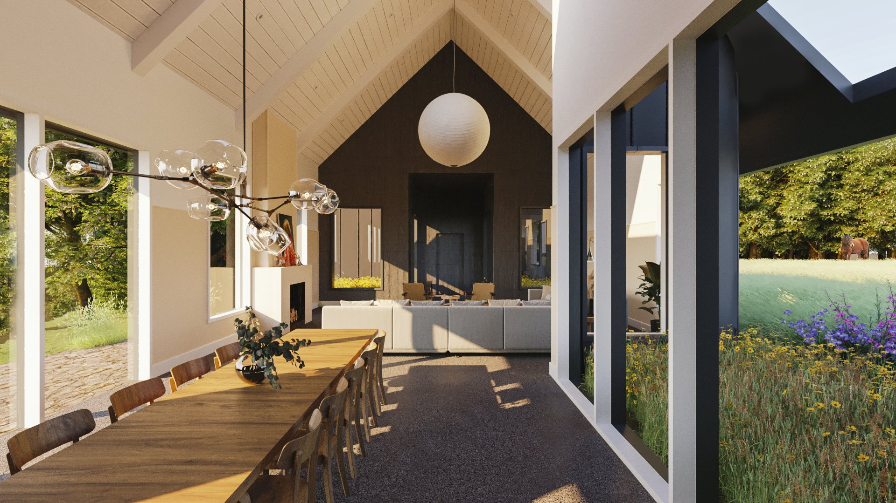
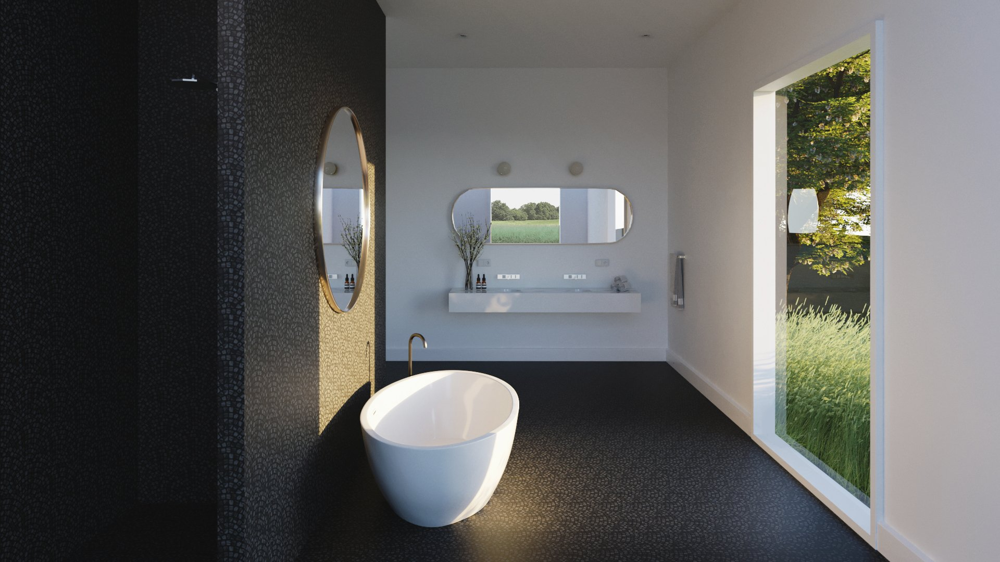
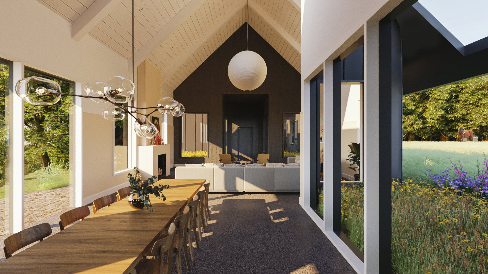
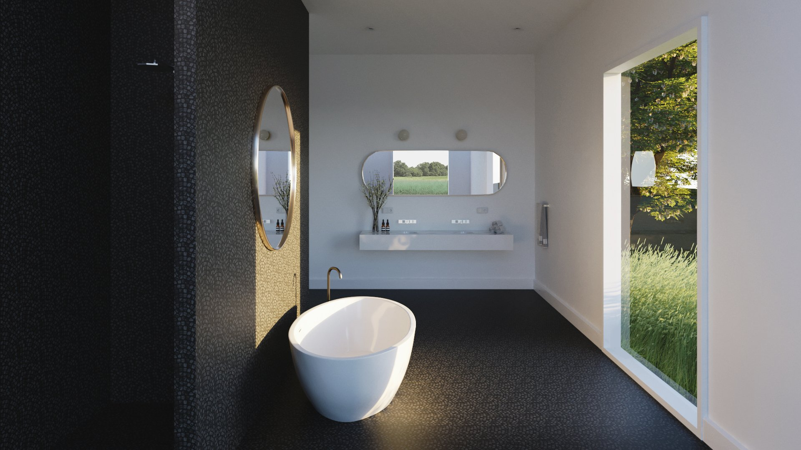

PROJECT:
Batavia Horse Farm
STATUS:
Design Documentation
LOCATION:
Batavia, Ohio
Horse Farm began with a masterplan for a site ecologically depleted by over 150 years of
monoculture farming. The goal was to reintroduce native flora and fauna while establishing
a framework for a landscape rich in ecological diversity and spatial experience.
The project is being developed in three phases. Phase one focuses on the design and construction
of the main house, conceived as four distinct volumes unified under a single roof. These volumes are
strategically pulled apart to allow nature to permeate the interiors, creating a dynamic relationship
between built form and landscape.
Future phases will include the design of a barn, riding arena, and the full implementation of the site’s landscape plan.
Team members involved include Federica von Euw, Andrew Tetrault, Billey Keidel, Aaron Tkac.
Credits: Joy Mullappally (Visualization)